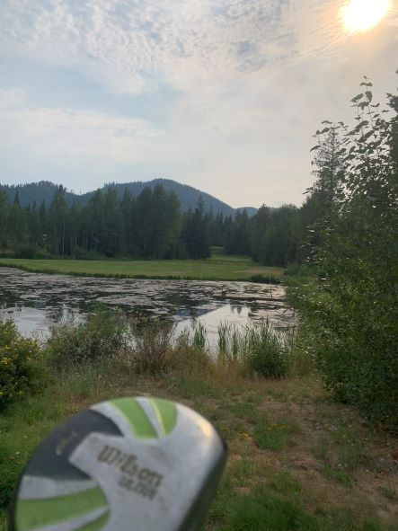

Sam Smolen's SCC IT162 Portal

A little about me!
My name is Sam Smolen. I'm currently studying computer programming at Seattle Central College while also employed as a general contractor. My career interests in programming are in the backend rather than design. Although I want to learn how to build full stack applications.
I like to spend my freetime with my girlfriend, family or friends, and also my dog Moose.
Hobbies of mine would be playing video games, golfing, playing frisbee or working out.